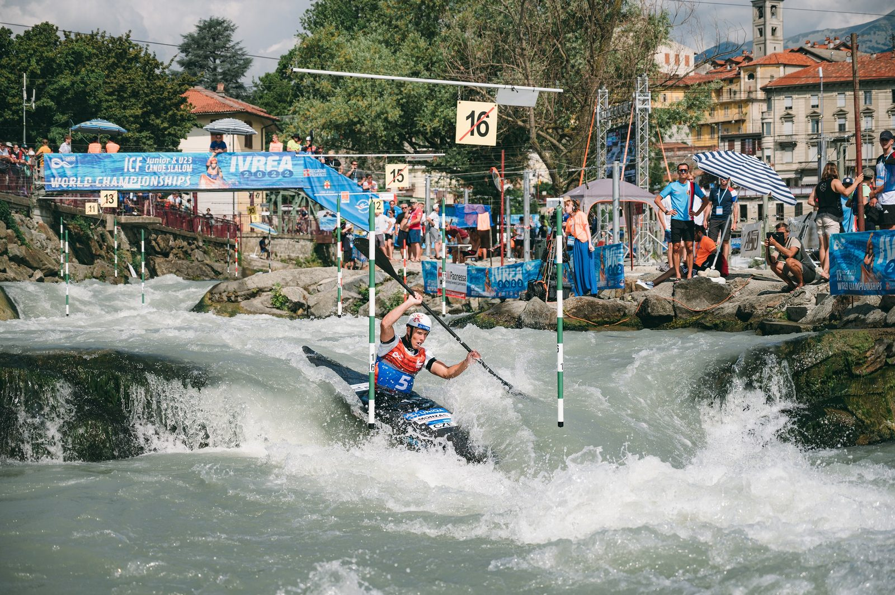

Už příští týden startuje mistrovství Evropy juniorů a závodníků do 23 let ve vodním slalomu. Významná mezinárodní událost zavítá do Českých Budějovic, konkrétně do Vodáckého areálu Lídy Polesné v termínu 11.–14. srpna. Na startu se představí kompletní česká špička složená z celé řady medailistů z předchozích šampionátů. Jedním z nich je i místní rodák Jakub Krejčí, který bude doma obhajovat titul z loňského mistrovství Evropy v Solkanu.
Na letošním světovém šampionátu do 23 let patřil k favoritům na medaili, finálová jízda se však úřadujícímu mistru světa v této kategorii nevydařila podle představ, když po chybě v první polovině trati inkasoval trestnou padesátku a obhajoba titulu se rozplynula. I přes velké zklamání bere kajakář Jakub Krejčí tento nezdar jako cennou zkušenost.
Vitězná jízda
„Byl to pro mě opravdu velký neúspěch. Ale myslím si, že v cestě za tím být nejlepší a sbírat seniorské úspěchy jsou právě i neúspěchy, ať už v kategorii do 23 let nebo v juniorech. Takže finále v Ivree zároveň vnímám jako velkou zkušenost, postavilo mě to nohama zpátky na zem,“ uvádí loňský mistr Evropy do 23 let a čerstvý vítěz závodu World Ranking Race v pražské Troji.


Ivrea 2021
Svěřenec trenéra Jana Vondry se na domácí závody těší, v místním areálu trénuje bezmála 10 let. „Kanál je hodně silově náročný, voda tu hodně pulzuje, je velmi nestabilní. Myslím si, že určitou výhodu oproti ostatním závodníkům mám, na druhou stranu uvidíme, jak se budu umět vyrovnat s tlakem domácího publika. Ale já si sám na sebe ten tlak moc nevytvářím, budu chtít podat jen to nejlepší, co umím a na co mám. Věřím, že když budu s jízdami spokojený, může z toho být hodně dobrý výsledek,“ doufá Krejčí, jehož následně čeká mistrovství České republiky na Lipně, kde bude obhajovat loňské vítězství, a poslední šestý závod Českého poháru. „Momentálně se cítím dobře. Teď už zbývá vyladit formu přímo tady v Českých Budějovicích a trochu se vyklidnit. Snad to všechno klapne. Závodit doma bude něco výjimečného, věřím, že všichni, nejen čeští závodníci, budou chtít předvést svoje top kvality. Doufám, že bude krásná atmosféra a dorazí mnoho diváků,“ uzavírá nadějný český kajakář.